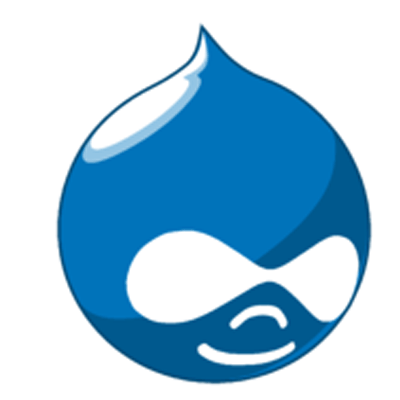
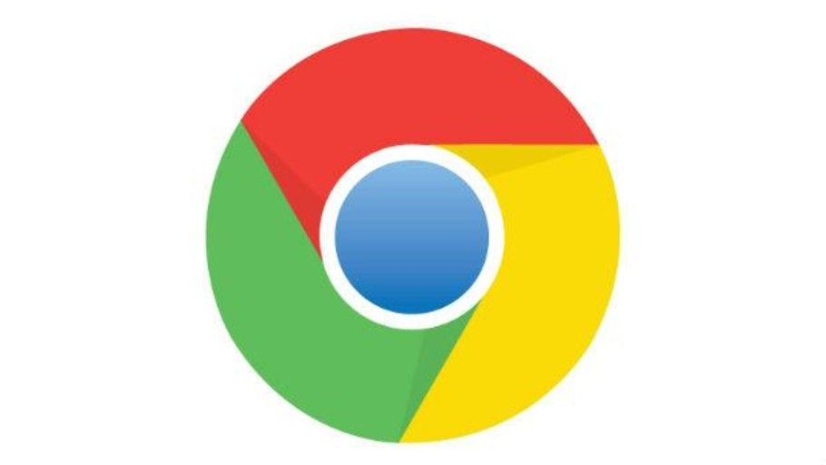
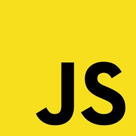
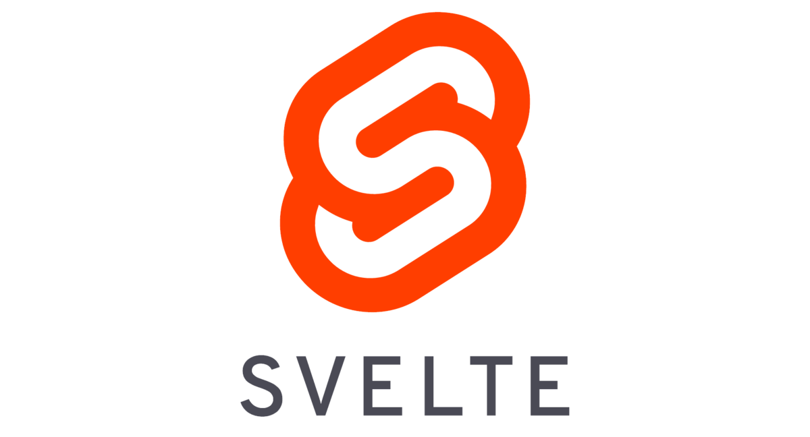

¿Que es html?
HTML es un lenguaje de marcado de hipertexto o “HyperText Markup Language” por el desarrollo de sus iniciales en inglés, básicamente este lenguaje se escribe en su totalidad con elementos, estos elementos están constituidos por etiquetas, contenido y atributos.
¿Que es la web?
La world wide web o, simplemente, web es uno de los servicios que funcionan sobre internet, nos permite acceder a información que está ubicada en otros computadores en otros lugares del mundo.
La web nace en 1992 con Tim Berners Lee. (enlaces).
Historia de la web
Worpress:
Es un sistema de gestión de contenidos lanzado el 27 de mayo de 2003, enfocado a la creación de cualquier tipo de página web.
1/3 de los sitios web están creadas con él.
Joomla:
Es un sistema de gestión de contenidos que permite desarrollar sitios web dinámicos e interactivos.
Sistema Gestor de contenido

Drupal:
Es un sistema de gestión de contenidos o CMS libre, modular, multipropósito y muy configurable que permite publicar artículos, imágenes, archivos y que también ofrece la posibilidad de otros servicios añadidos como foros, encuestas, votaciones, blogs, administración de usuarios y permisos.
Moodle:
Es una herramienta de gestión de aprendizajes, o más concretamente de Learning Content Management, de distribución libre, escrita en PHP.
Ullamcorper suscipit lobortis nisl ut aliquip
Contenidos

Chrome:
Es un navegador web de código cerrado desarrollado por Google, aunque derivado de proyectos de código abierto.
Corre apps Web, su propia versión de office.

HTML 5:
Es la quinta revisión importante del lenguaje básico de la World Wide Web, HTML.
Para maquetar págias web.
No existen dos url iguales.
La S en una url significa seguro.

JavaScript:
es un lenguaje de programación interpretado, dialecto del estándar ECMAScript.
Lenguaje creado hace 26 años.
Frameworks para el cliente
| Angular JS | Vue | React | Svelte |
|---|---|---|---|
 |
 |
 |